스토리보드
| 씬 번호 | 스토리보드 | 프롬프트 | 산출이미지 |
|---|---|---|---|
| 1 |
 제목 |
underwater perspective looking up at ocean surface at night, view from below water, moonlight penetrating through water surface, light rays filtering down, rippling water surface from underneath, serene meditative ultra quiet, Mario Giacomelli style black and white photography, high contrast, heavy crosshatching texture, rough grain structure, stark dramatic shadows, grainy film aesthetic, abstract composition, caustic light patterns, deep blacks and bright whites, textured surface, cinematic underwater shot |

|
| 2 |
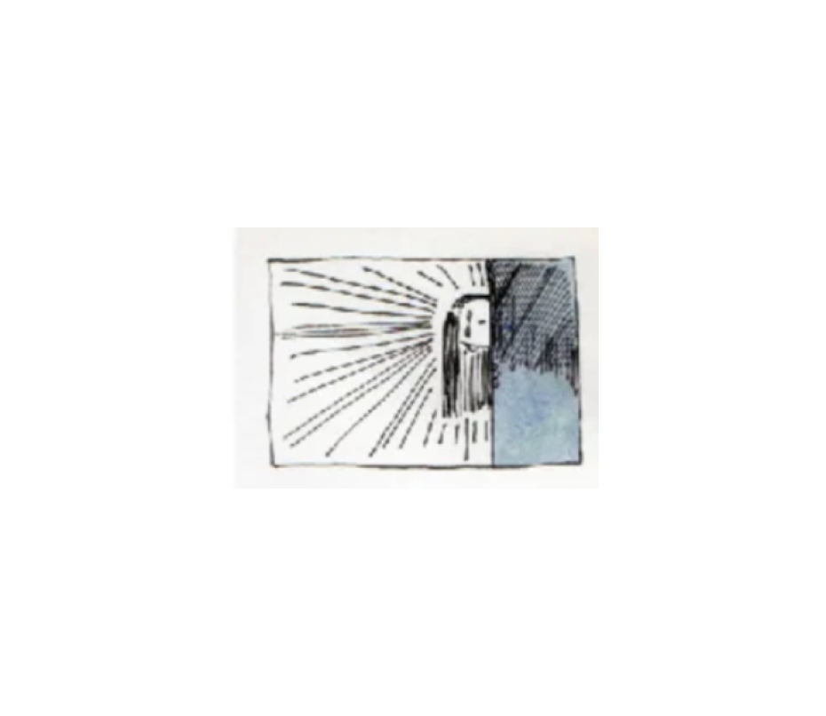
시선 |
A black and white documentary-style photograph. Deep depth of field. A narrow alley or interior room scene. The composition is divided with a wall or corner occupying the right 20% of the frame. A streetlight in the background casts natural urban lighting. Behind the wall's edge, a figure appears with their head tilted 90 degrees horizontally, as if lying sideways. Long hair hangs down naturally following gravity. Only half of the head peeks out from behind the wall's edge - the face is completely black, invisible due to the harsh backlight from the streetlight, a pure dark silhouette with no facial features visible. The body is completely hidden behind the wall. The blackened face is positioned to stare directly at the camera. Strong contrast between the pitch-black silhouette and the streetlight glow behind. Stark black and white tones. Documentary realism, grainy film texture, high contrast, deep focus. Urban night photography. Cold, unsettling atmosphere of a real city alley. | 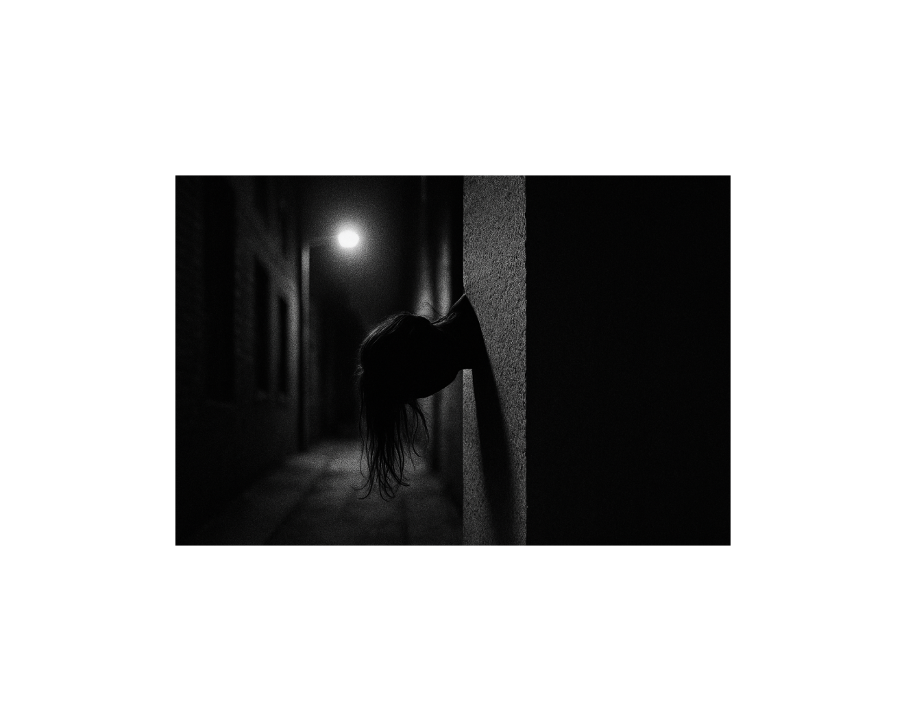 |
| 3 |
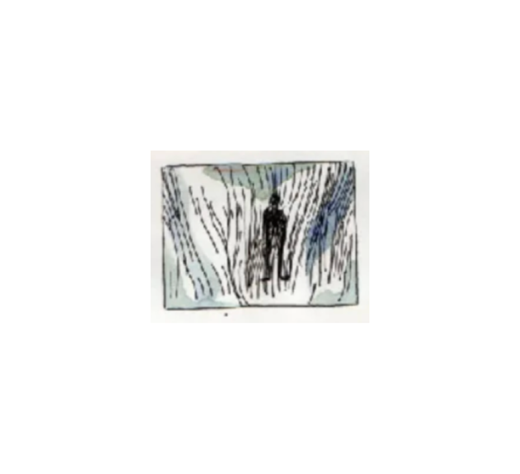 머리카락 |
A black and white documentary-style photograph. Deep depth of field. A field of tall reeds standing motionless, all in dark silhouette against bright backlight. A solitary human figure stands among the reeds - completely black silhouette, gender indistinguishable, no features visible. The figure is staring toward the camera. Everything appears as stark black shapes against harsh backlight - the reeds, the person, all reduced to pure silhouettes. No fantasy elements, no flowing hair, no movement. Just a static, haunting scene of dark forms against bright light. High contrast black and white photography, documentary realism, grainy film texture, deep focus throughout the entire frame. Cold, unsettling atmosphere captured in a single frozen moment. night moonlight |

|
| 4 |
 틈 |
A black and white documentary-style photograph. Deep depth of field. A closed mint-colored Korean-style door viewed straight on. The room interior is pitch black with lights off. At the bottom of the door, there is a small gap between the door and the floor. Just a few strands of long black hair - barely visible, just slightly protruding through the narrow gap from the dark room into the lit side where the viewer stands. Very minimal amount of hair, subtle and disturbing. Beyond the dark room where the unknown person stands, there is light, so bright light is seeping through the gap under the door, creating a glowing line at the bottom. The contrast between the bright light seeping through and the pitch-black interior. The mint-colored door occupies most of the frame. Strong contrast and stark lighting. Documentary realism, grainy film texture, high contrast, deep focus. Eerie, claustrophobic atmosphere. Korean apartment interior setting. Stark black and white tones. The unsettling detail of a few hair strands and light creeping under a closed door. |

|
| 5 |
 벽에 비치는 그림자 |
A black and white documentary-style photograph. Deep depth of field. Full shot of a narrow alley wall in a Korean urban setting at dawn. Dim, low morning light casting long shadows. A large, disturbing shadow is cast on the wall - the shadow appears to be of someone walking by with a long cloth or fabric draped over their entire body and head, the cloth extending all the way down to drag on the ground. The shadow shows the long, trailing fabric creating an eerie, elongated silhouette. The shadow form is obscured and featureless, like a figure completely shrouded in a floor-length cloth passing through the alley. The outline is vague and deeply unsettling, making it impossible to determine any human features or gender. On the wall, there are just a few simple potted plants. The shadow's source is not visible in the frame. The entire alley scene captured in the dim, gray light of early morning. Soft, diffused lighting of dawn, not harsh daylight. Documentary realism, grainy film texture, high contrast, deep focus. Korean urban alley atmosphere at dawn. Stark black and white tones with gray morning ambiance. Ghostly shadow of a figure draped in long, ground-dragging cloth in the quiet, early morning setting. |

|
| 6 |
 아파트 그림자 극장 |
A black and white documentary-style photograph. Deep depth of field. Extreme long shot of an apartment building facade at night. Multiple windows arranged in a grid pattern, all dark and unlit except for one single illuminated window. In that one lit window, a silhouette of someone appears to be doing dishes or standing at a kitchen sink. The contrast between the single bright window and all the surrounding dark windows creates an isolated, lonely atmosphere. The figure in the window is small and distant due to the extreme long shot. The building appears to be a typical Korean apartment complex. Documentary realism, grainy film texture, high contrast, deep focus. Urban nighttime atmosphere. Stark black and white tones. The eerie feeling of being watched or watching the only sign of life in an otherwise dark building. | 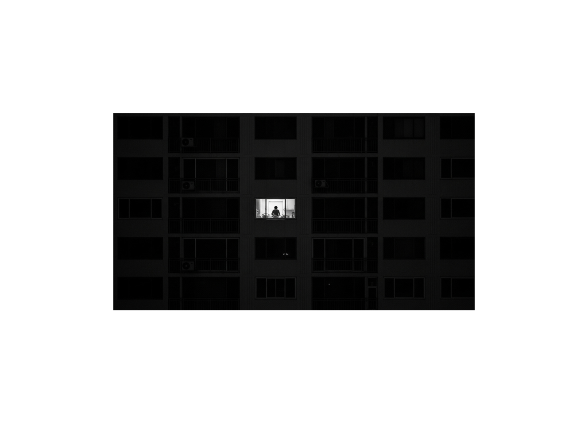 |
| 7 |
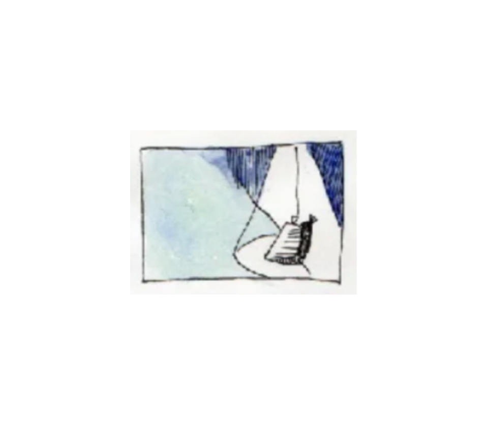 쓰레기더미들 |
Abandoned garbage bags under a street lamp at night, sketchy pen drawing style, crosshatching technique, dramatic shadows, blue and black ink illustration, minimalist composition, melancholic atmosphere, urban scene, heavy contrast between light and dark, hand-drawn aesthetic, editorial illustration style --ar 16:9 --style raw |

|
| 8 |
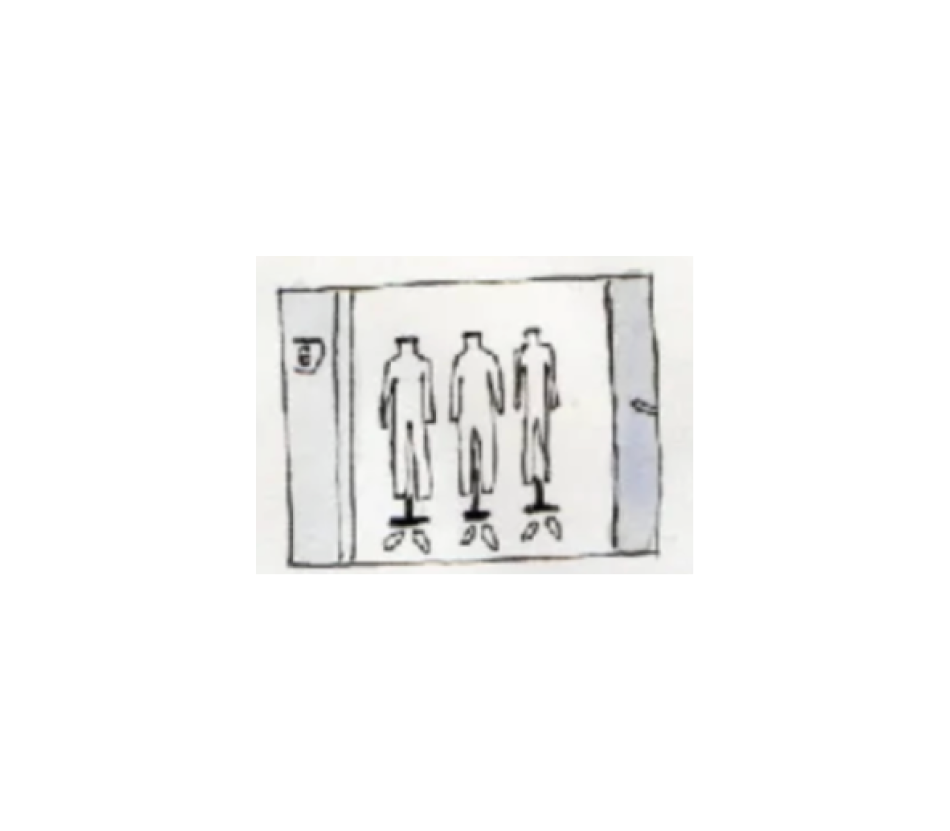 목이 없는 마네킹 |
Empty dark street at night, full shot composition, storefront display window, headless footless mannequins with only neck torso and legs, no heads no feet, bare mannequin bodies, three incomplete body forms, shoes placed below mannequins on floor, empty shoes beneath each figure, car headlights reflecting on window glass, light trails from passing cars mirrored on display window, deserted urban street, dim lighting, eerie atmosphere, Mario Giacomelli style black and white photography, high contrast, grainy film texture, haunting mood --ar 16:9 --style raw |

|
| 9 |
 역광의 사람들 |
Dusk street dramatic backlight, silhouetted figures Mario Giacomelli style, shadow-like people passing on both sides, elongated shadows, all architecture in black, monochrome scene, pedestrians as pure silhouettes, explosive backlight rays, buildings dark masses, stark contrast black and white, poetic urban scene, heavy grain texture, emotional depth --ar 16:9 --stylize 250 |

|
| 10 |
 손으로 걷기 |
Horror film scene extreme close up, hand descending stairs in reverse crab walk position, body bent backwards, unnatural posture, inverted descent, fingers clawing down staircase, disturbing hand detail, Mario Giacomelli aesthetic, black and white, rough grainy texture, stark shadows, unsettling mood, nightmarish quality, contorted movement --ar 16:9 --stylize 200 | 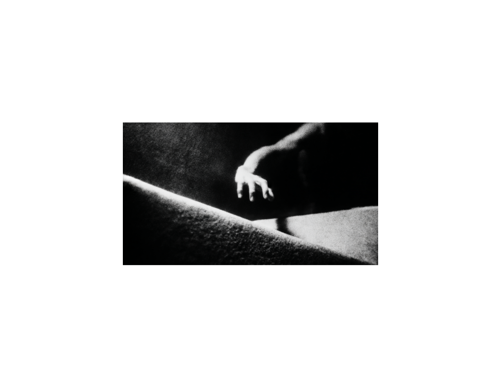 |
| 11 |
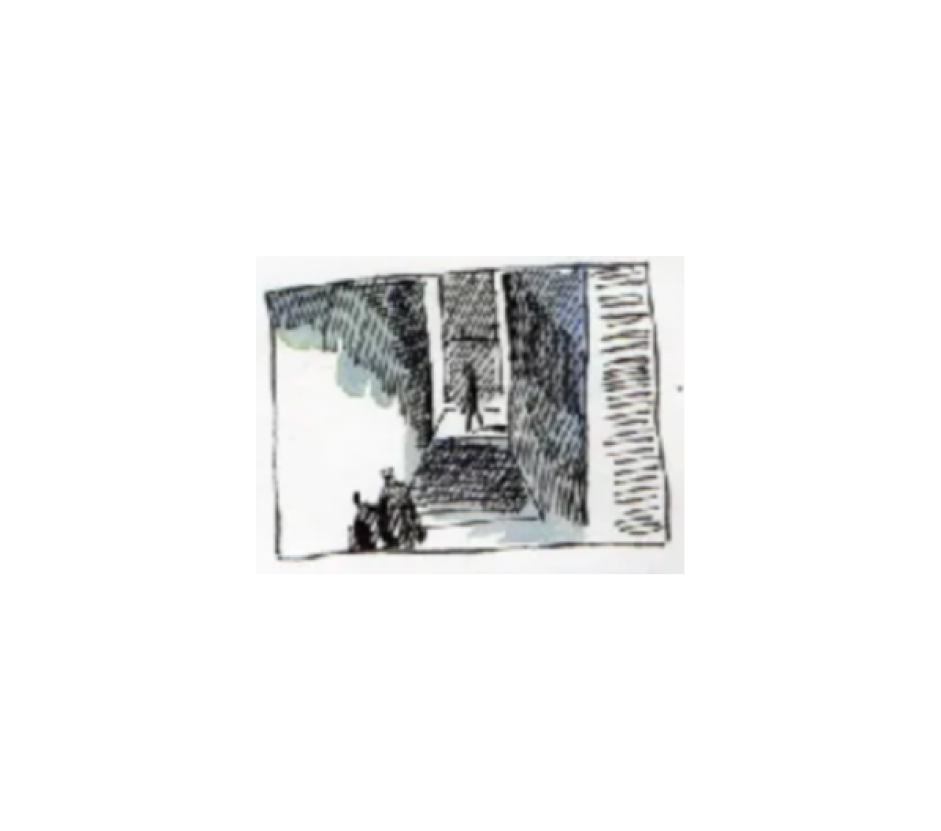 틈으로 걷기 |
Long shot narrow alleyway, shadowy figure moving through passage, person rendered as pure silhouette, dark shadow passing between buildings, tight urban space, walls on both sides, Giacomelli inspired monochrome, extreme contrast black and white, rough sketchy texture, heavy grain, mysterious presence, architectural corridor, intimate urban scene --ar 16:9 --style raw | 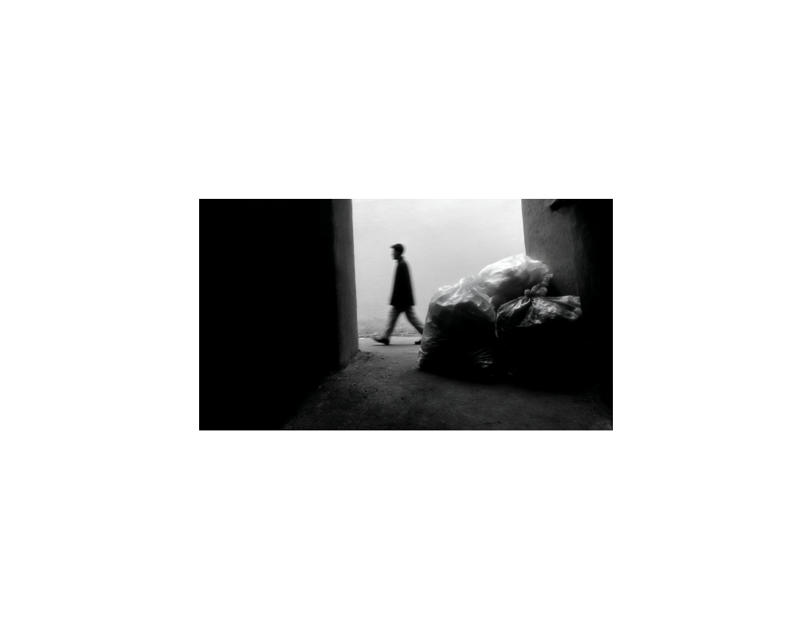 |
| 12 |
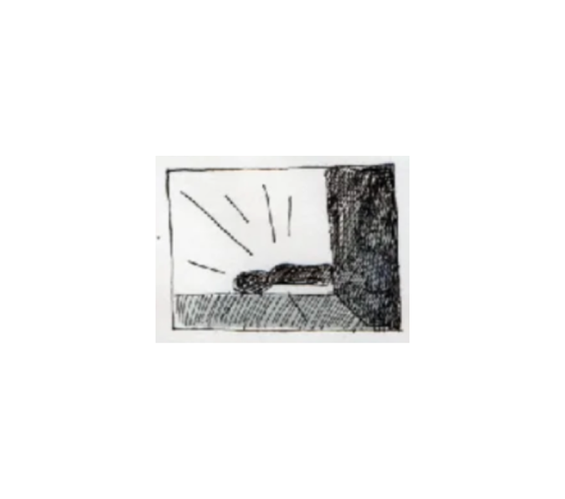 그림자 걷기 |
Close up shot of person's shadow on alley wall, human silhouette shadow only, no person visible, shadow cast between buildings, narrow alley corner, wall and ground visible, Mario Giacomelli style black and white photography, high contrast, heavy crosshatching texture, rough grain structure, stark shadows, architectural geometry, mysterious presence, grainy film aesthetic, dramatic lighting |

|
| 13 |
 검은 고양이 |
Startled black cat at night, direct confrontation moment, scared cat facing camera, eyes wide, cat illuminated by light source, radiating light beams around cat, dramatic backlight, Mario Giacomelli style black and white photography, high contrast, heavy crosshatching texture, rough grain structure, stark shadows, shocked cat expression, intense eye contact, grainy film aesthetic, dramatic moment | 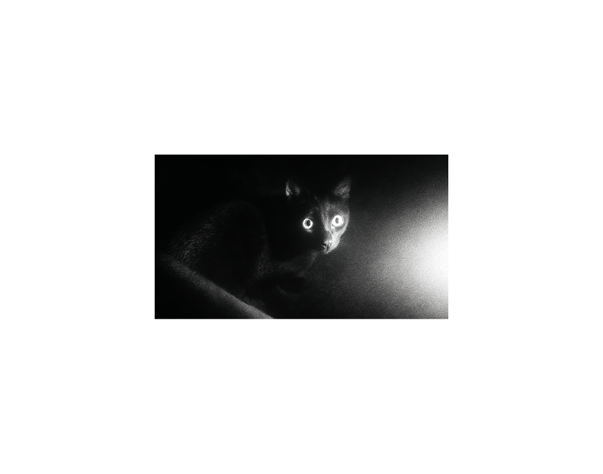 |
| 14 |
 움직이는 그네 |
Extreme close up of empty swing swaying at night, no person, swing seat and chains in tight frame, abandoned playground swing in motion, swing moving by itself, deserted playground, eerie atmosphere, Mario Giacomelli style black and white photography, high contrast, heavy crosshatching texture, rough grain structure, stark shadows, swing chains visible, mysterious movement, grainy film aesthetic, dramatic lighting, haunting mood --ar 16:9 --style raw |

|
| 15 |
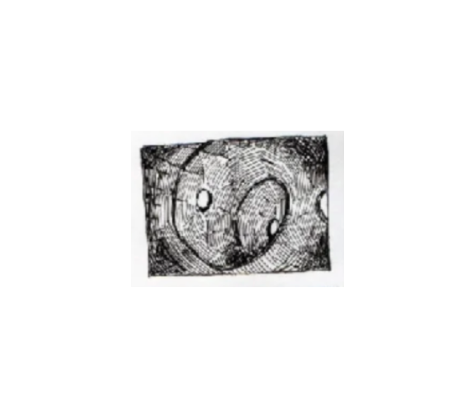 원형 미끄럼틀 |
Inside cylindrical playground slide tunnel, circular tube interior, holes visible in slide walls, cylinder seams and joints visible, rivets and connection points, industrial tube interior, Mario Giacomelli style black and white photography, high contrast, heavy crosshatching texture, rough grain structure, stark shadows, mechanical details, tunnel perspective, grainy film aesthetic, dramatic lighting, mysterious atmosphere | 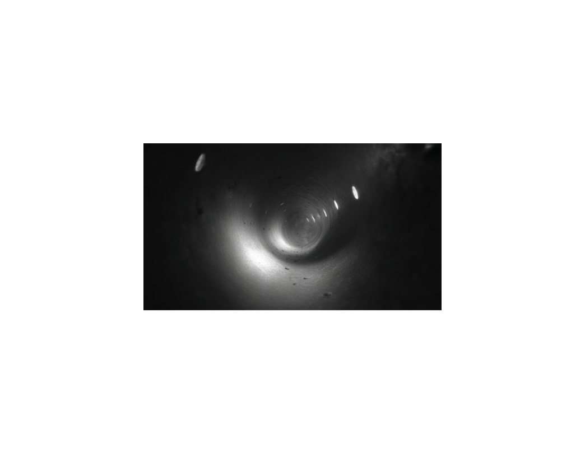 |
| 16 |
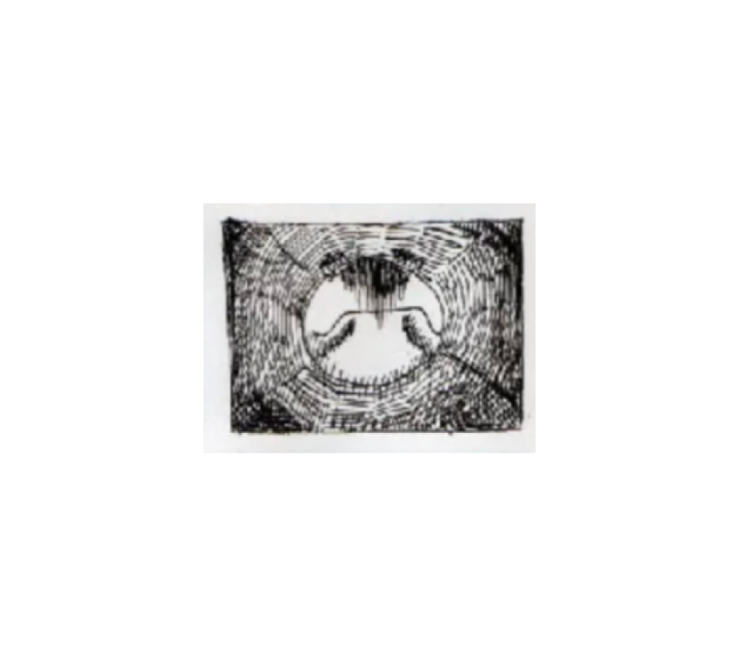 출구 |
Inside children's short plastic slide tunnel, kids playground slide interior, quickly curving small tube, sharp bend visible, curved plastic tunnel for toddlers, short slide bending immediately, compact plastic tube interior perspective, Mario Giacomelli style black and white photography, high contrast, heavy crosshatching texture, rough grain structure, stark shadows, curved tunnel vision, tight curve, grainy film aesthetic, dramatic lighting, mysterious atmosphere |

|
| 17 |
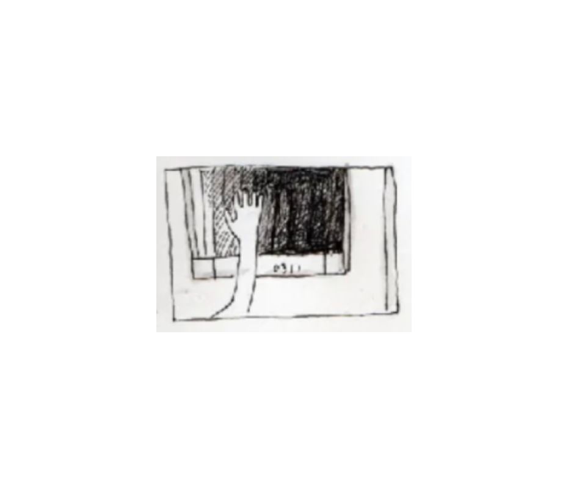 끝없는 손 |
Korean apartment elevator mirror reflection, arm only visible, hand waving hello, arm raised in greeting gesture, sleeveless arm, no body visible, only arm and hand in frame, arm greeting gesture infinitely reflected in mirrors, Korean apartment lift interior, standard Korean residential elevator, hand waving multiplying endlessly, parallel mirrors creating endless reflections, arm repeating in mirror tunnel, Mario Giacomelli style black and white photography, high contrast, heavy crosshatching texture, rough grain structure, stark shadows, infinite regression, surreal atmosphere |

|
| 18 |
 꿈속에서 들은 말 |
Extreme close up side profile mannequin, smooth featureless head like display mannequin, completely blank face, faceless mannequin bust head talking from side, smooth surface with zero features, no facial details at all, mannequin speaking with entirely smooth blank face from profile view, clean featureless surface, strong backlight illuminating from behind, dramatic backlighting, side profile speaking gesture, ECU side angle, Giacomelli inspired monochrome, extreme contrast black and white, rough sketchy texture, heavy grain --ar 16:9 --style raw |

|
| 19 |
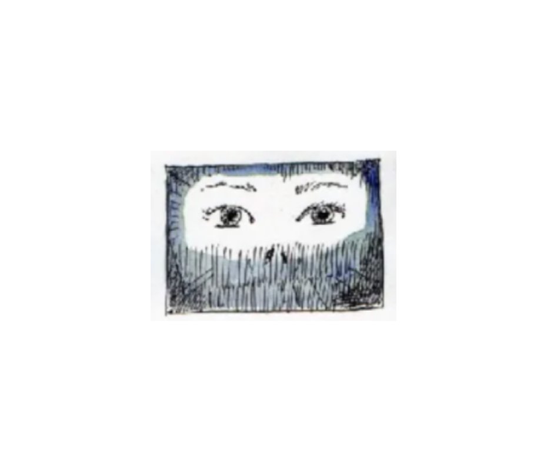 눈빛 |
Extreme closeup shot, only eyes visible in darkness, Rembrandt lighting on eyes only, face hidden in deep shadow, just eyes illuminated by small light source, rest of face engulfed in darkness, dramatic eye-level gaze, eyes staring intensely lit by single light, face obscured in black shadow except eyes, dramatic chiaroscuro lighting, eyes emerging from darkness, monochrome, extreme contrast black and white, rough sketchy texture, heavy grain, mysterious face in shadow, only eyes exposed to light, intense eye contact, deep blacks --ar 16:9 --style raw |

|
| 20 |
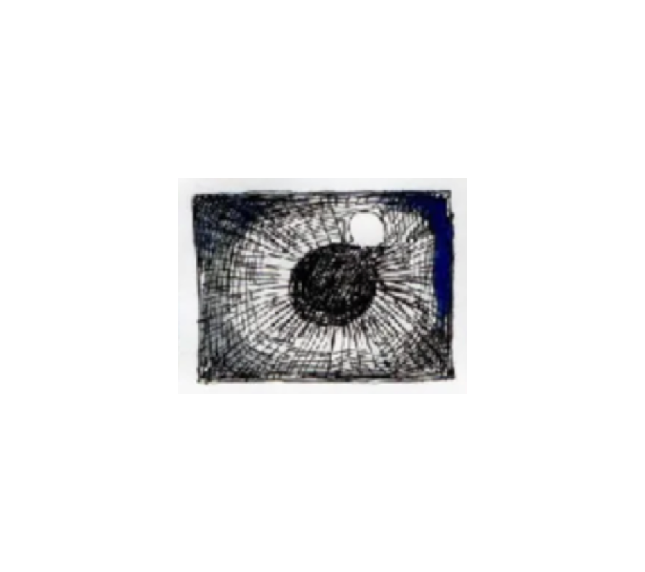 눈동자 |
Extreme close up of single eyeball, iris and pupil extreme zoom, eyeball macro shot, eye detail magnified, radiating lines from pupil, explosive light rays bursting outward from center, dramatic eye texture, Mario Giacomelli style black and white photography, high contrast, heavy crosshatching texture, rough grain structure, stark shadows, intense circular pattern, concentric lines, grainy film aesthetic, dramatic lighting, abstract eye composition | 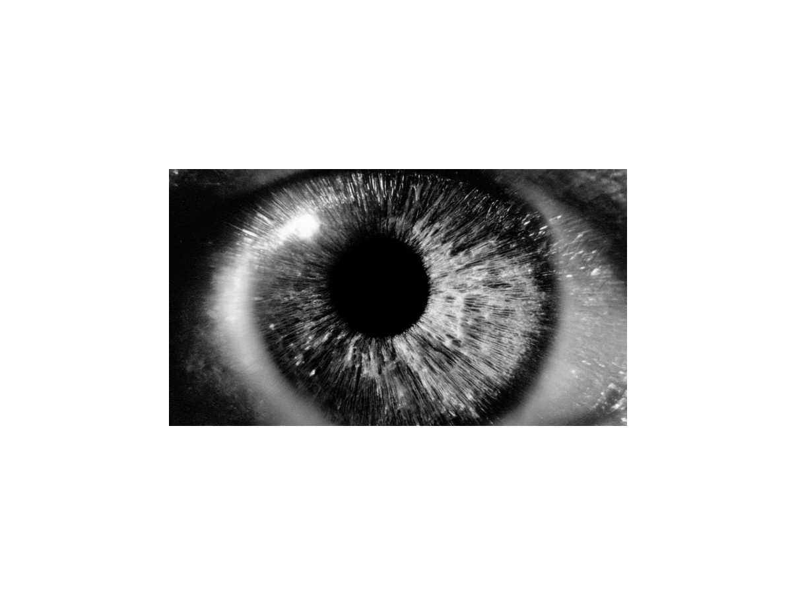 |
| 21 |
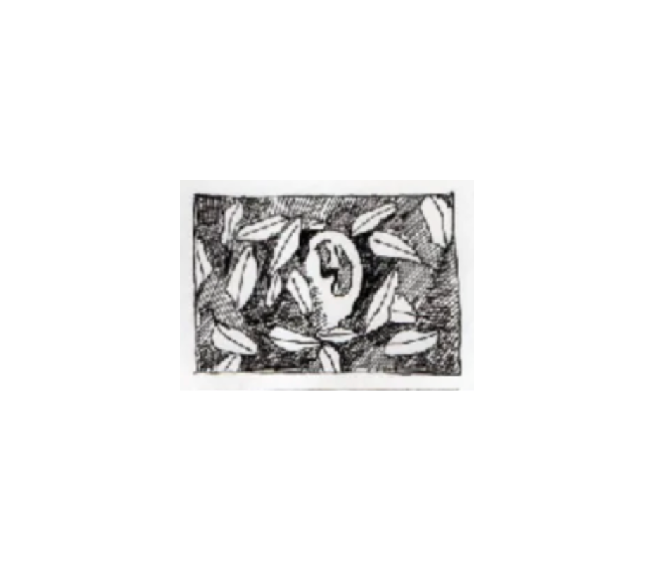 파묻힌 귀 |
Top-down view human ear visible between fallen leaves, overhead shot looking down, ear showing through autumn leaf coverage, leaves scattered around ear, bird's eye perspective, ear peeking from leaf litter, partially hidden ear among leaves, top view composition, Mario Giacomelli aesthetic, stark black and white photography, crosshatch drawing quality, extreme contrast, rough grainy texture, dramatic shadows, surreal scene from above --ar 16:9 --profile s5zwrxo --stylize 250 --draft | 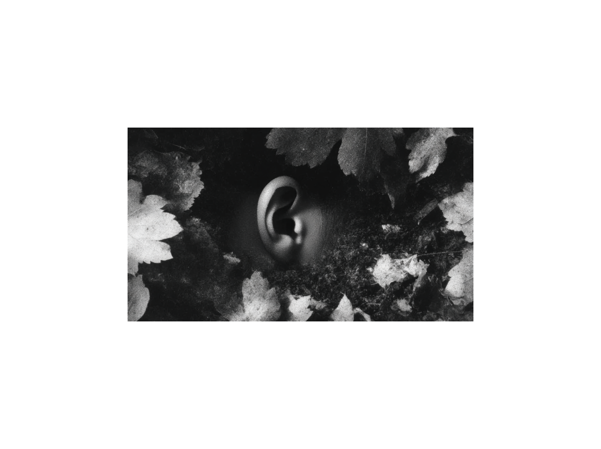 |
| 22 |
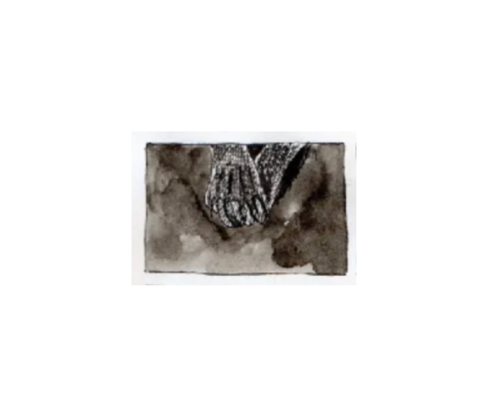 손잡는 그림자 |
Hands clasped together in darkness, shadow-like hands holding each other, hands grasping in dark, silhouette hands intertwined, hands meeting in shadow, dark shadowy hands joined together, hands holding in deep darkness, Mario Giacomelli style black and white photography, high contrast, heavy crosshatching texture, rough grain structure, stark shadows, mysterious hand gesture, grainy film aesthetic, dramatic low-key lighting, somber atmosphere --ar 16:9 --style raw |

|
| 23 |
 검은 주름 |
Nearly flat thin fabric with subtle gentle movements, almost flat sheer cloth with slight wrinkles, mostly flat textile with minimal undulation, barely moving fabric surface, delicate cloth nearly flat with small wave-like creases, subtle ripples on flat fabric, gentle minimal fabric movement, slight folds on flat surface, thin material almost still with tiny movements, Mario Giacomelli style black and white photography, high contrast, heavy crosshatching texture, rough grain structure, stark shadows, minimalist fabric composition, grainy film aesthetic, subtle dramatic lighting |

|
| 24 |
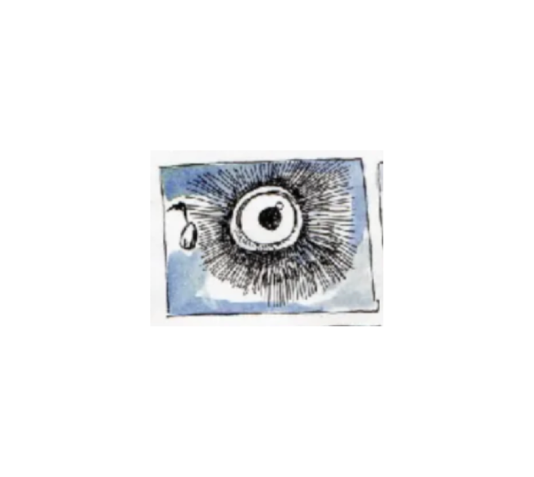 비둘기의 눈동자 |
Extreme close up of pigeon eye, bird eye magnified, pigeon eye macro shot, eye detail extreme zoom, radiating lines bursting outward from eye, explosive light rays from center, dramatic eye texture, circular pattern, pigeon eye filling frame, Mario Giacomelli style black and white photography, high contrast, heavy crosshatching texture, rough grain structure, stark shadows, intense circular radiating pattern, grainy film aesthetic, dramatic lighting, abstract eye composition | 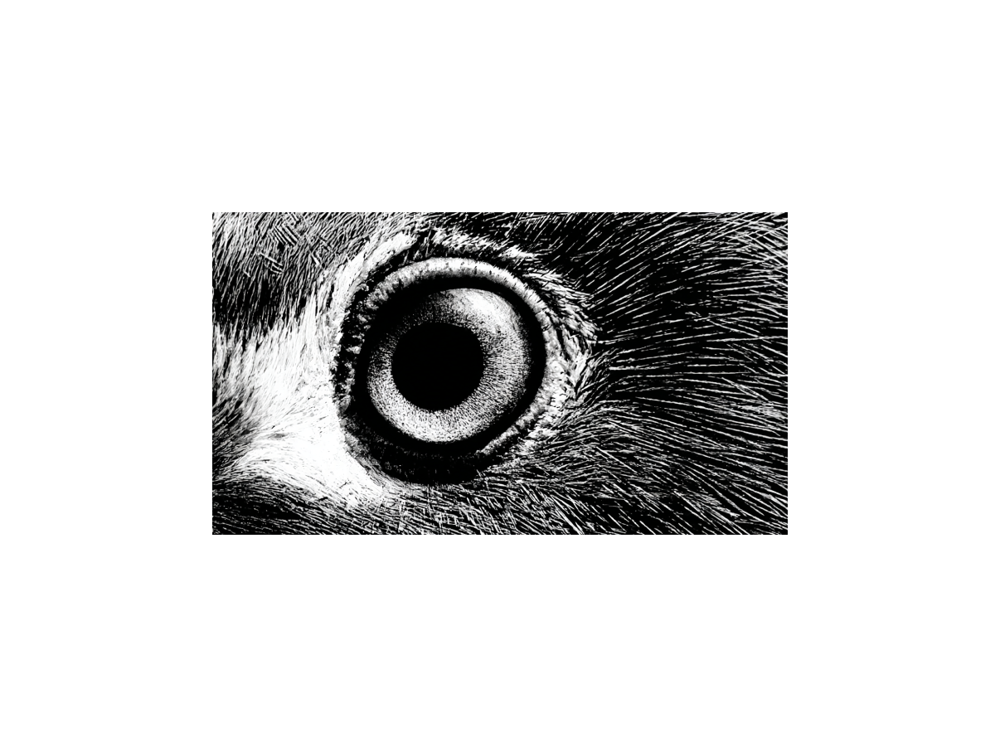 |
| 25 |
 비둘기 발 |
Close up of single pigeon leg from side view, one bird leg magnified side angle, single pigeon foot detail side profile, side view close-up one bird claw, one pigeon leg on ground from side, side angle detailed single pigeon foot texture, one bird talon side view, single foot and leg of pigeon side profile only, Mario Giacomelli style black and white photography, high contrast, heavy crosshatching texture, rough grain structure, stark shadows, side view single bird leg composition, grainy film aesthetic, dramatic lighting |

|
| 26 |
 도마뱀의 꼬리 |
Close up only severed lizard tail on grass, just cut-off tail alone lying on grassland, tail only abandoned on grass, only severed tail without body on grassy surface, just tail in grass field, lizard tail alone detail on grass blades, only cut tail remaining on meadow, nothing but tail left behind, tail by itself, Giacomelli inspired monochrome, extreme contrast black and white, rough sketchy texture, heavy grain, solitary tail only composition, dramatic shadows on grass |

|
| 27 |
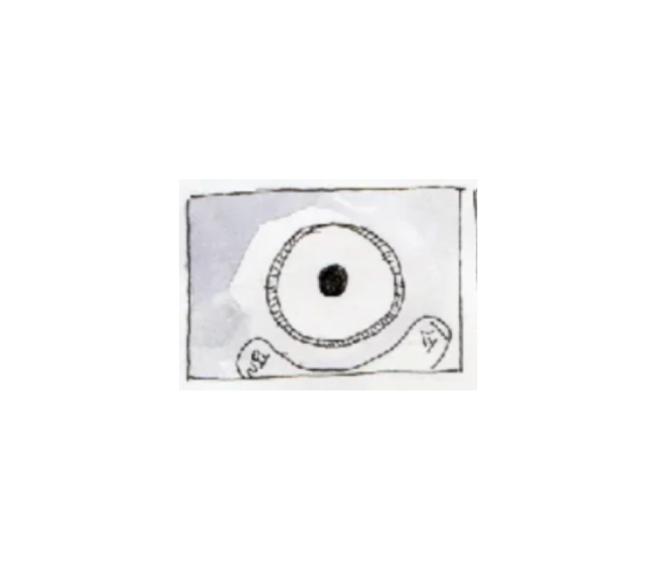 열쇠구멍 |
Keyhole close up, key hole detail, circular keyhole opening, door keyhole view, keyhole perspective, looking at keyhole, keyhole on door or surface, round keyhole shape, Mario Giacomelli style black and white photography, high contrast, heavy crosshatching texture, rough grain structure, stark shadows, dramatic keyhole composition, grainy film aesthetic, mysterious lighting, voyeuristic perspective --ar 16:9 --style raw | 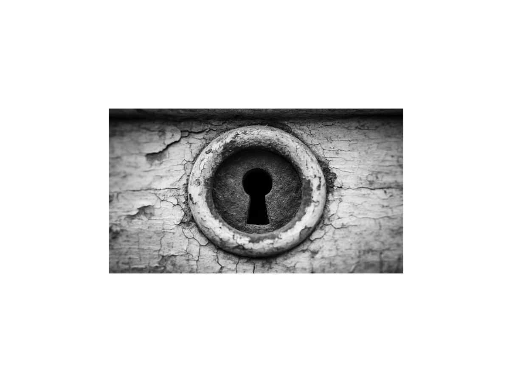 |
| 28 |
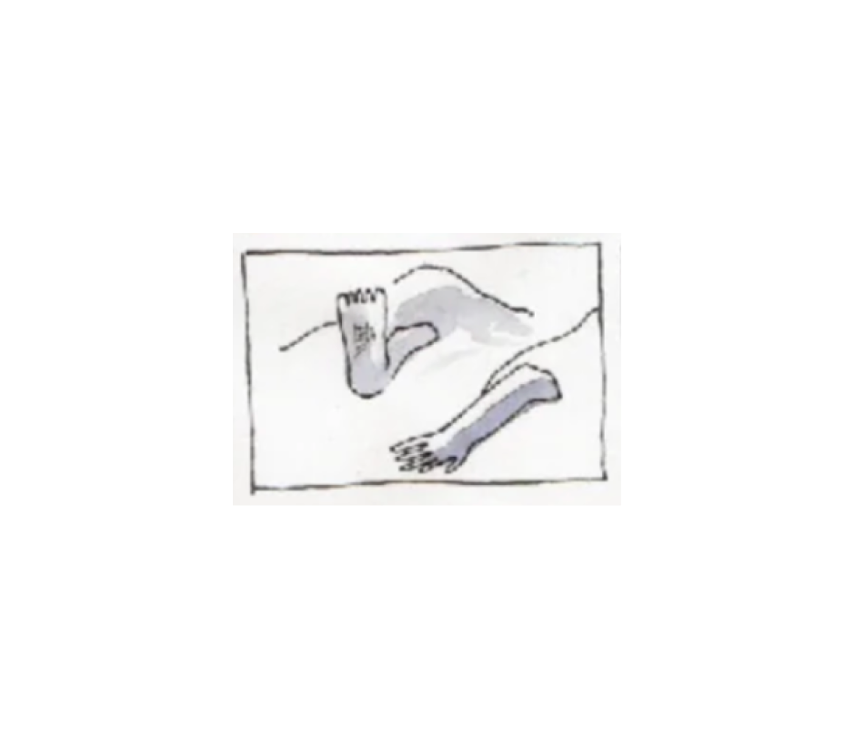 놀이터 |
Playground sandbox with bodies partially buried in sand, feet and hands arm emerging from sand, limbs sticking out of sandbox, only hand arm and foot leg visible in sand, bodies mostly buried with limbs protruding, partial body parts in playground sand, arm and leg emerging from sand surface, hands and feet showing from buried bodies, Giacomelli inspired monochrome, extreme contrast black and white, rough sketchy texture, heavy grain, unsettling playground sandbox scene, dramatic shadows on sand without heads |

|
| 29 |
 매달린 손 |
extreme close up of two gloved hands gripping horizontal bar, workout gloves on pull-up bar, tight grip on metal bar, hand detail magnified, finger and glove texture, Mario Giacomelli style black and white photography, high contrast, heavy crosshatching texture, rough grain structure, stark dramatic shadows, grainy film aesthetic, abstract composition, deep blacks and bright whites, textured glove surface, tension in grip, cinematic lighting --ar 16:9 --style raw | 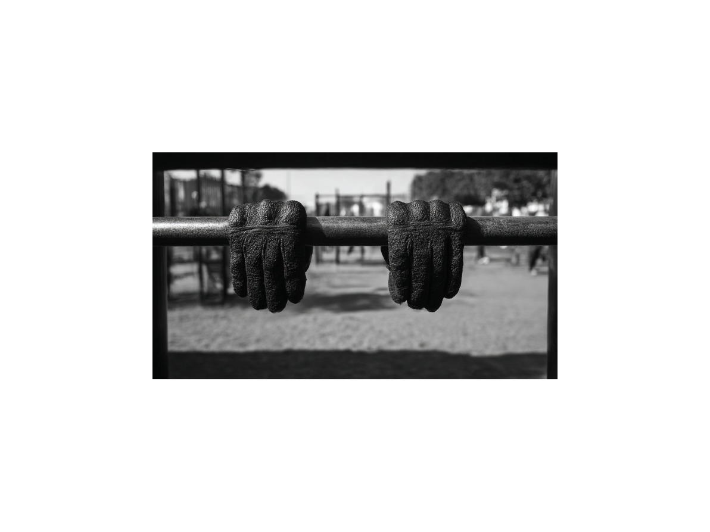 |
| 30 |
 널린 다리 |
pants with feet hanging on horizontal bar, trousers with legs and feet draped over pull-up bar, empty pants hanging from iron bar, legs of pants with feet attached suspended, surreal clothing on workout bar, Mario Giacomelli style black and white photography, high contrast, heavy crosshatching texture, rough grain structure, stark dramatic shadows, grainy film aesthetic, abstract surreal composition, deep blacks and bright whites, fabric texture detail, cinematic lighting | 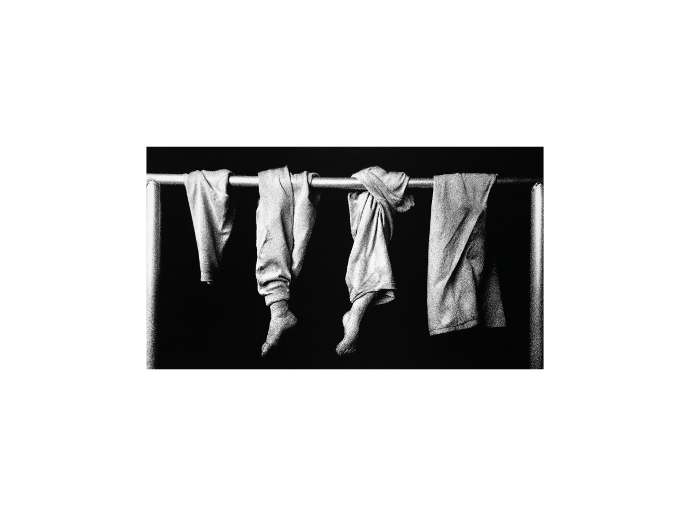 |
작업노트
눈에서 길을 찾을 수 있을거라 생각하던 때가 있었다. 이미지를 산출할 때마다 내가 왜 이 이미지들(의 배열)을 보고 싶어했는지 생각했다. 그림을 텍스트로 묘사하고 글이 프롬프트가 되어 다시 이미지로 변하는 과정에서 무언가 누락되고, 추가되었다. 내가 보고 싶었던 것을 보기 위해서는 더 엄밀하게 조건을 추가해야했다. '아니 그게 아니라...'를 반복하는 입장이 되었다. 나는 본 적 없는 이미지를 본 것처럼 묘사하면서 과거의 본 것들을 기반으로 이미지를 설명하고 있었다.
눈을 오래 들여다보고 있으면 길을 잃기 일쑤였다. 당시 나는 스스로를 바라보는 시선에서 벗어나고 싶었다. 끈질기게 따라붙는 시선은 숨어도 숨어도 끝내 틈으로 들어서곤 했다. 길을 잃는 것으로 시선에서 벗어날 수 있을거라 생각했는지도 모른다. 종종 내 몸은 아주 찰나의 순간만 존재하는 듯 했다. 다른 것과 접촉하는 순간만. 이미지에서는 그것이 잘린 신체로 보이겠지만 실제로는 그것이 유일하게 존재하는 신체였다. 이 이미지들은 끊임없이 탈출구를 찾아헤맸던 기록이기도하고 동시에 몸이 닿을 세계를 찾기위해 유랑하는 유령의 이야기이기도 하다.
6년 전에 그린 스토리보드를 '실제'로 볼 수 있다 생각하니 신이 나기도 했다. 그런데 '실제'란 무엇인가? 그림은 실제가 아닌가? 가끔 무언가를 너무 가까이 보다보면 그것들은 전체와는 상관없는 독립된 무언가가 되어 부분만의 세계가 된다. 그리고 다시 그 부분은 뿌리처럼 자라나 연상되는 새로운 세계를 투사하고 투영한다.
이미지 스타일은 마리오 자코멜리Mario Giacomelli의 검은 수도복을 입고 눈 싸움을 하는 젊은 사제들을 찍은 '나에게는 얼굴을 쓰다듬을 손이 없다(Io non ho mani che mi accarezzino il volto)'를 참고 했다. 자코멜리의 사진의 노는 사제들의 검은 제복과 하얀 눈의 대비는 아름답지만, 흑백이 명확한 이미지는 때로 한쪽으로 넘어가면 다른 한쪽이 사라질 것만 같은 서늘함이 있다.
실재하지 않는 이미지에서 느껴지는 정동은 사실 스크린 기반예술에서 만들어온 가상성과 다르지 않다. 여기에 존재하지 않는 것을 지금 여기에 소환한다는 점에서. 하지만 정말 없었는가 하면, 과거의 데이터들이 지금의 없는 이미지들을 있게 하며, 있을 것이라 추측하여 생성한다. 이번 작업을 진행하면서 인공지능 동영상 생성 모델이 만드는 시적언어의 가능성을 엿보았다. 현실에는 아직 존재하지 않지만 감각적으로 이미 도래했다고 느낀 것을 시각화할 수 있다는 점에서.
"Perché? Ogni ruota diversa che gira cerca il significato della vita. Io cerco la speranza nella sofferenza e metto le mani dove prima c'era la bocca. Anche nel buio non so. Il dolore delle persone è così grande che per contemplare tutto questo mondo ci vuole tempo insufficiente."
"왜?
각기 다른 도로를 굴리가는 바퀴들
모두 삶의 의미를 찾고 있다.
나는 고통 속에서 희망을 구하고
기쁨인 줄 알았던 것은 입 안에 쓴맛을 남긴다.
거기에 삶이 있을지도 모른다.
사람들의 고통이 너무나 커서
그 모두를 경험하기에는 이 세상의 생애로도 시간이 부족한 그곳에."
— 마리오 자코멜리 (Mario Giacomelli)